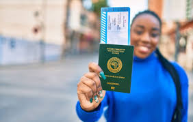

Visa application
Gathering all your documents and ensuring they are correct is probably my least favorite part about applying for a visa. But with Relay travel here, your documents can be taken care of so that you can focus on the important things in life, like traveling.
Atlys can be downloaded onto your phone and with this app you can use tools that will check your passport photo, hotel itinerary, and flight itinerary.
Safety information
As businesses close for the year and the movement of people from one place to the other go on an upward spiral, people are seeing more and more reasons to travel for vacation, leisure and of course celebrate with their loved ones daily. Wherever you choose to travel, it has become extremely important to pay attention to safety tips before any trip either by road or air. Similarly, with recent developments in respect to the Omicron variant,
we all can take control over our health & improve it. Supporting people to make healthy choices – choices that improve the well-being of people and the planet cannot be overemphasized.
We have put together a few tips for you on how to keep safe in these dire times:
Be vigilant and wary of strangers.
Avoid crowded places. Have adequate knowledge of emergency exits and stay alert of strange activities within the environment.
Let your family and friends know where you are always,
emergency and security situations may arise. Be accountable!
Never walk alone when going to events. You are easy prey when you don’t move in groups.
Make sure your phones are always charged. This way, you are always reachable, and can also call out especially in emergencies. Power banks will come in handy.
As much as possible, do not take shortcuts especially for dark and lonely roads.
Eat just enough, not too little and not too much. Over-eating can cause you to be sick. Monitor what goes into your mouth.
Alcohol flows freely at events and parties over the holidays. Be careful not to drink too much. Alcohol lowers the mental alertness and coordination of people. You put yourself at risk when you consume too much alcohol. If you must though, do not drink on an empty stomach. Make sure you eat first. That would reduce the effect of intoxication.
Do not leave your drink and food
out of sight so
nothing is added to them without your consent.
Shop wisely, and be careful of pickpockets, bag snatchers, schemers who target shoppers
As much as possible, avoid taking children to crowded marketplaces and shopping malls.
Air and road traffic gets busier at the end of the year. Some roads are accident-prone and target for robbery during the end of the year. Meanwhile,
the weather may be unfavourable for flights. Therefore, you need to decide carefully, the best mode of transport for you, bearing safety in mind.
Drive safely and carefully. The last few months of the year, most especially December are the periods of the year with the highest incidents of road accidents than any other period of the year. Follow all driving precautions:
Avoid driving under the influence of alcohol
Stay within speed limits when driving
Always wear seat belts even if you are in the backseat
Ensure proper vehicle maintenance and check before use.
14. Ensure you get tested for COVID-19 with the approved COVID-19 testing facility.